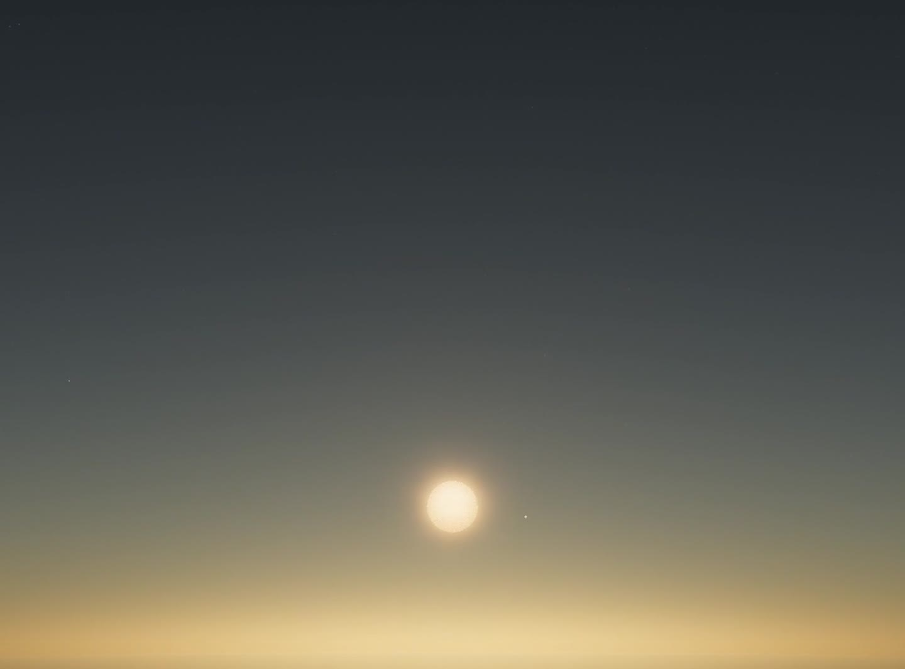
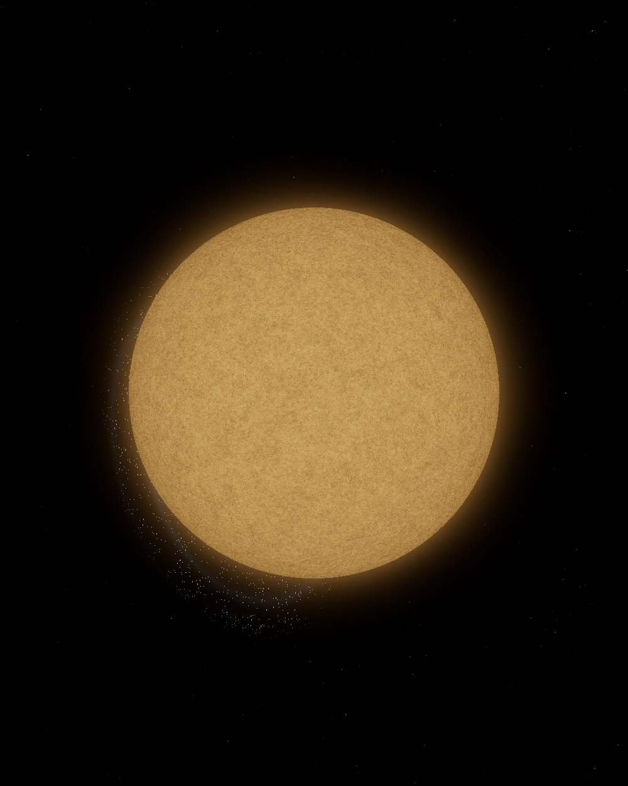
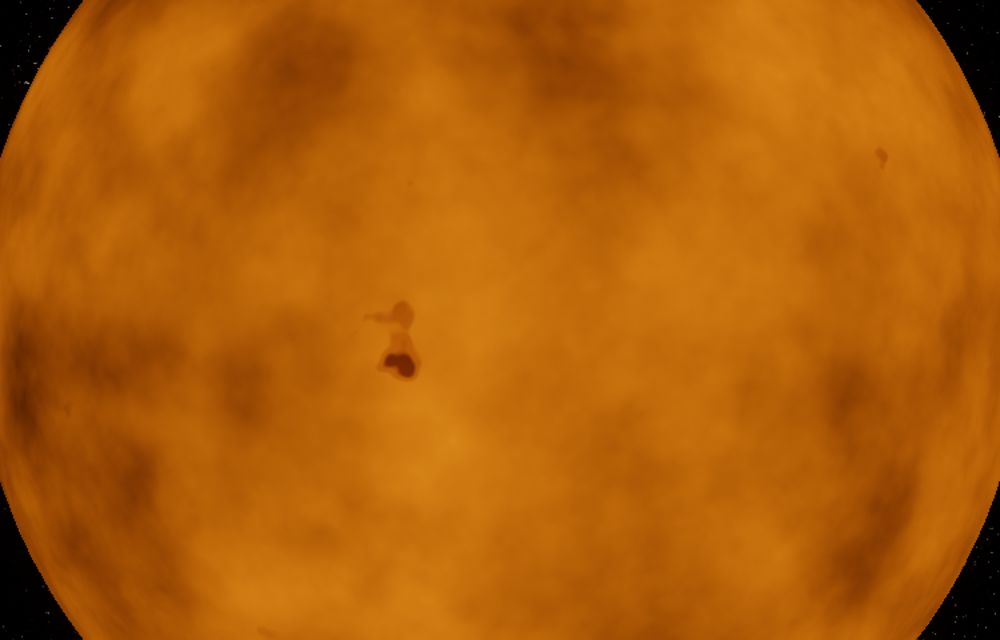
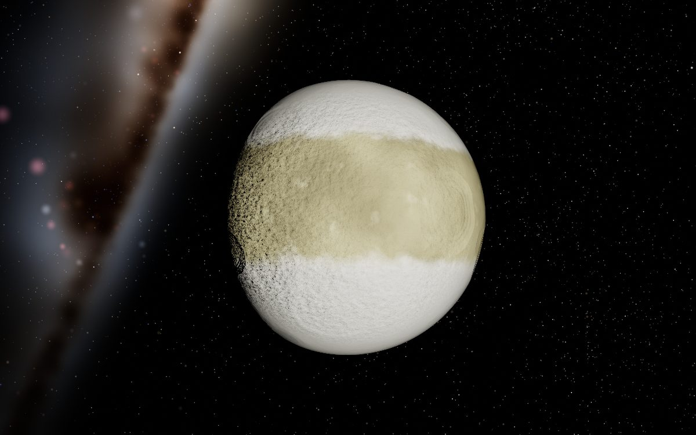
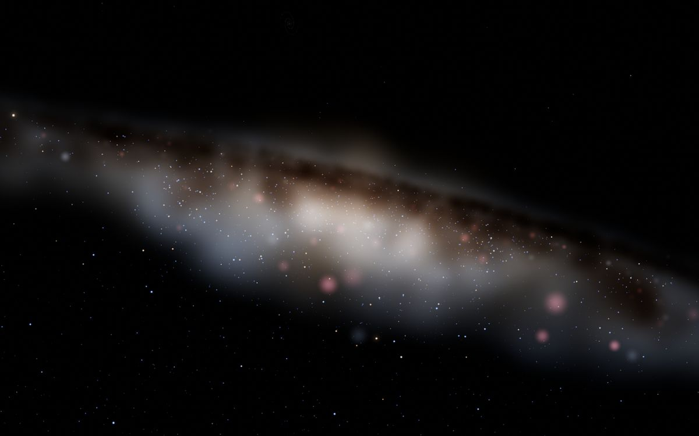
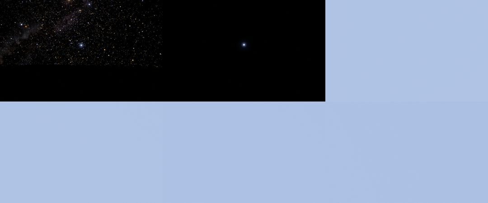
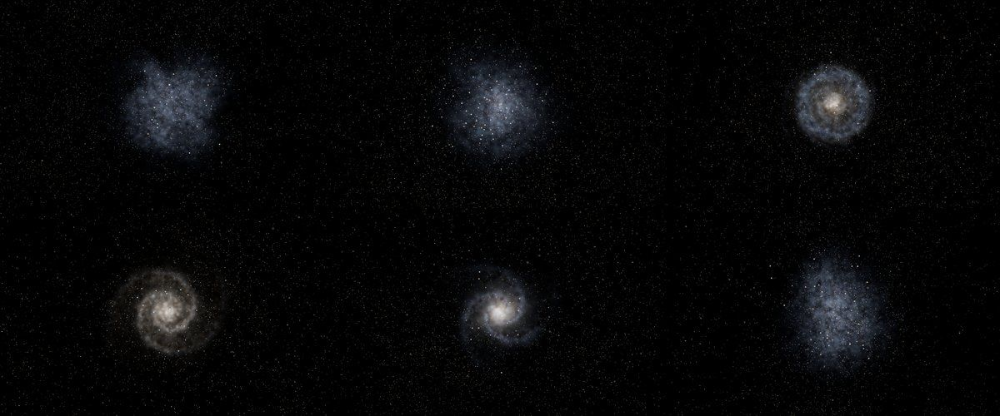

A finished screenshot hides every wrong turn behind it. This page is the wrong turns: what
the first versions looked like, what broke, what the first fix got wrong, and the tests
that now keep each fix in place. Most stories begin with something I noticed was wrong on
screen and end with a way to measure it.
Timeline
Started: a realistic night sky you could zoom into, seen from Earth.
First public build — the true-scale renderer, a Windows app, this website, and a native macOS shell.
iPhone and iPad builds; every star given a system; exoplanets given their own faces.
The Windows crash at launch fixed. An infinite universe: Gaia's 1.1 million stars, generated galaxies, and star systems invented on demand.
Precision far from home, click any point of light, a piano soundtrack, and varied galaxies, black holes and ringed giants.
Then and now

5 September: the first landing-page picture. A sky gradient and a disc.Now: the same idea — standing on Earth — under a sky computed by scattering.

Early Betelgeuse: right size, flat surface.

Now: giant convection cells and starspots, scaled to a supergiant's gravity.
1. The 65,000-kilometre grid
Problem
Orbiting a star in a galaxy ten megaparsecs away, the star shook back and forth by six
pixels as the camera turned, and its moons were drawn about 66 pixels from where they
belonged.
First attempt
Positions were stored in kilometres from the Sun as 64-bit doubles — the standard
approach, and fine at home. Moving the world so the camera sat at the origin (a
"floating origin") steadied the near scene, but the shaking stayed.
What I learned
A double has 52 bits of fraction, so the gap between neighbouring numbers grows with
the number. At 3 × 1020 km the gap is 65,536 km. Every position out there
snaps to that grid, and subtracting two snapped positions — camera minus planet — can
be wrong by a whole grid step, which is larger than most moons.
Solution
Never subtract two big numbers. Each planet and moon now stores its exact offset from
its own star, and anything drawn near the camera is worked out from those small
vectors. Camera flights were rebuilt the same way, as an offset from the target rather
than a position in space.
Result
The shake fell from ±6 pixels to under ±0.5, and moons sit where their orbits put them.
Why the first approach could not work: the grid is coarser than the thing being drawn.
2. The black moons
Problem
In an invented system, clicking any moon of a giant planet left the screen completely
black. The camera had arrived inside the moon.
First attempt
The flight was rebuilt with the precision fix from the story above, and an automated
check confirmed the camera now stopped at 3.4 moon radii instead of 0.002. The
screenshots were still black: average brightness 0.6 out of 255.
What I learned
A fix can be right and still not be the fix. Reading the moon's shader inputs showed
its sunlight was 0.0000016 of normal. Exposure was set for the light at the moon's
orbit around its planet — a thousandth of an astronomical unit — instead of its
distance from the star, so the camera expected a million times too much light. And
moons behind their planet were approached from the night side.
Solution
Expose for the distance from the star, and when the usual framing would show mostly the
dark side, come in from the lit side instead.
Result
Sunlight back to 1.0, average brightness 17–44, every moon tested arriving lit and outside.
mean brightness 0.6 / 255 camera at 0.002 moon radii
Before: what the screenshot test measured.

After: the same moon, arrived at from the lit side.
3. Click any point of light
Problem
Inside Andromeda the sky is full of stars, but they were only paint: clicking one did
nothing. I wanted every dot to be a place.
First attempt
Making invented stars clickable the same way as catalogue stars. The test click at the
edge of Andromeda picked "Hamburger eta" — a generated star that was not drawn
anywhere, but had no catalogue brightness, so nothing filtered it out.
What I learned
Picking has to agree exactly with drawing. If the click logic and the shader disagree
about which dots are visible, you get clicks on nothing and misses on things you can
plainly see.
Solution
On a click, every kind of point light is checked with the same brightness formula the
shaders use, and the brightest within 11 pixels wins. A generated star becomes a full
system — planets, moons, names — from a seed hashed from its position, so the same dot
is always the same place.
Result
Clicking a star inside Andromeda flies you to it in about 40 milliseconds of work; a far smudge becomes a galaxy you can enter.

Inside Andromeda. Every point here can be clicked and visited.
4. Tests that look at the screen
Problem
A universe has too many places to check by hand, and a fix in one place breaks another:
changing what the click function returned silently broke spacecraft selection.
First attempt
Flying around after every change. It was slow, and it missed exactly the things that
mattered, like a planet ten megaparsecs away that I had not happened to visit.
What I learned
Most of my judgements about the picture can be turned into numbers — brightness, how
far the camera ended up, how much a star moves between frames, whether a click landed
on what was under the cursor.
Solution
Over forty scripts drive the real app in headless Chrome. One visits every kind of
destination; one sweeps the camera through a full 360° and fails on any jump; one
scrolls from the ground to the surface of Vega without stopping; another flies to
every moon of a far system and measures where it arrived and how bright it is.
Result
The spacecraft check caught the broken click the first time it ran, with the message "picked [object Object]".

The zoom test's contact sheet: one unbroken scroll from the ground to Vega's surface.
Other mistakes worth keeping
Galaxies as white slabs. Small galaxies were drawn as flat bright rectangles until they became clouds of sprites with dust and star-forming knots.
A Windows app that crashed at launch. The first installer opened to nothing on some machines.
Two Betelgeuses. Two star catalogues both contained it, so it was drawn twice.
Words all over space. Galaxy names floated in open space by default; now the sky is quiet until you ask.
The App Store's sandbox. The Mac app had to be rebuilt to run sandboxed before Apple would review it.
Variety, the newest change
Invented galaxies used to share one model per type. They now vary the way real ones do:
two to six arms, tight or loose winding, grand-design or patchy, big bulge or none, rings
and ring galaxies, lopsided discs, shells around ellipticals, starbursts and quenched red
discs. Black holes vary in disc size, temperature and how well fed they are, and some
giant planets now have rings.

Six generated neighbours, forty megaparsecs from home.
The test suite
A selection of the checks, and what each one fails on:
travel — every kind of destination is reachable and arrives lit.
orbit-360 — a full turn of the camera never jumps more than 5°.
zoom — one scroll from the ground reaches a star's surface without stalling.
roam — leaving free flight does not throw the camera across the system.
craft — every spacecraft can be picked, and none leaves stale entries behind.
system — a host star knows its galaxy and its planets.
site — the download links point at a real file, and support and privacy are reachable.